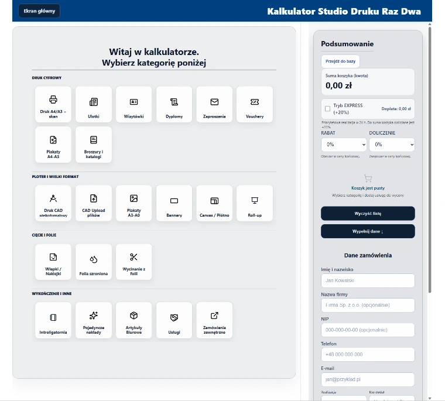
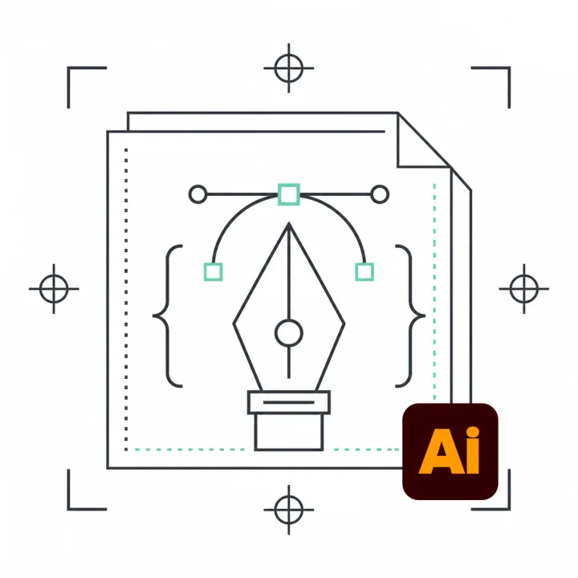
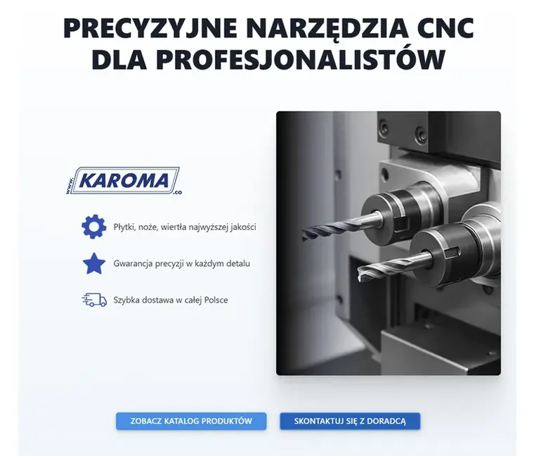

Uporządkuj procesy, odzyskaj czas.
AUTOMATYZACJE · NARZĘDZIA · GRAFIKA
Tworzenie raportu co tydzień bywa męczące.
Ten sam ruch 40 razy dziennie staje się nudny i zniechęcający.
AUTOMATYZACJE · NARZĘDZIA · GRAFIKA
Tworzenie raportu co tydzień bywa męczące.
Ten sam ruch 40 razy dziennie staje się nudny i zniechęcający.
Najtrudniej jest znaleźć i nazwać to, czym naprawdę trzeba się zająć. Gdy już to wiem, zamieniam to w narzędzie, które robi to szybciej.

Problem
Każda wycena druku to ręczne liczenie tych samych parametrów — ok. 60 minut na jedno zapytanie.
Rozwiązanie

Problem
Przed każdym drukiem plik trzeba było ręcznie sprawdzić pod kątem kolorów i cienkich linii — 5–20 minut za każdym razem.
Rozwiązanie

Problem
Marka bez spójnego wyglądu i bez sprzedaży online — każdy materiał wyglądał inaczej.
Rozwiązanie
Całość dzielę na 3 etapy — każdy tak samo ważny.
Rozpoznaję realny problem i ustalam priorytety: co zaprojektować, zautomatyzować.
Projektuję rozwiązanie dopasowane do firmy i jej potrzeb, po czym składam całość w spójny produkt.
Testuję, wdrażam i przekazuję gotowe narzędzie, projekt czy rozwiązanie z instrukcją — żeby dało się działać samodzielnie od pierwszego dnia.
Każda sytuacja wymaga indywidualnego podejścia, a szerokie spojrzenie zwiększa szansę na powodzenie projektu. Dlatego swoje umiejętności podzieliłem na 3 obszary.

Dla firm, które chcą uporządkować ofertę i zamienić stronę w czytelne narzędzie sprzedaży.
Dla zespołów, które tracą czas na ręczne, powtarzalne zadania. Najpierw sprawdzam, gdzie ucieka czas, potem to automatyzuję.
Dla firm, które chcą wyglądać spójnie — od logo po materiały do druku i do sieci.
Przez dziesięć lat zajmowałem się grafiką, a od trzech buduję narzędzia, aplikacje i automatyzacje. I te kilkanaście lat nauczyło mnie jednego: wystarczą chęci i odrobina zaangażowania, żeby to, co trudne i nudne, stało się łatwe i przyjemne.
Sam długo tkwiłem w powtarzalnej robocie — te same wyceny, te same poprawki, ten sam ruch po raz czterdziesty w ciągu dnia. W końcu przestałem się z tym godzić i zacząłem budować rzeczy, które tę żmudną część biorą na siebie. Okazało się, że to lubię najbardziej: wziąć coś męczącego i zamienić w coś, co po prostu działa samo.
Z taką intencją powstał każdy mój projekt — przemyślany, zaplanowany i doprowadzony do końca. Nie pomysł na slajdzie, tylko narzędzie wdrożone do codziennej pracy.
Pracuję sam i to świadomy wybór. W jednym projekcie jestem więc osobą od rozmowy, projektu i wdrożenia naraz — nie musisz spinać kilku wykonawców ani pilnować, kto za co odpowiada. Piszesz do jednej osoby i sprawa idzie dalej.
Zobacz profil na LinkedIn →Tak, jeśli chcesz uporządkować proces, uprościć stronę, wdrożyć automatyzację albo połączyć te obszary w jeden spójny system działania. Najczęściej współpracuję z firmami, które czują, że da się pracować szybciej, prościej i z mniejszym chaosem, ale brakuje im czasu albo partnera, który przeprowadzi to od początku do wdrożenia.
Zaczynamy od krótkiej rozmowy i poznania Twojej sytuacji: co dziś nie działa, co chcesz uporządkować i jaki efekt chcesz osiągnąć. Na tej podstawie proponuję najlepszy kierunek działania, zakres współpracy i kolejne kroki.
Mniejsze automatyzacje zamykam zwykle w kilka tygodni, większe projekty trwają kilka miesięcy. Harmonogram z etapami ustalamy po analizie, więc od początku wiesz, kiedy zobaczysz pierwszy efekt.
Każdy projekt wyceniam po krótkiej analizie zakresu. Wycenę dostajesz z podziałem na etapy, żeby było jasne, za co płacisz i kiedy zobaczysz efekt. Orientacyjny próg dla produktów cyfrowych znajdziesz na stronie usług.
Wyobraź sobie pracę bez tego jednego problemu — proces, który dziś zabiera Ci godziny, zaczyna działać sam, a Ty wracasz do prowadzenia firmy zamiast do ręcznego poprawiania tego, co powinno działać od dawna.
A jeśli wolisz po prostu oddać to komuś, kto zrobi to za Ciebie — napisz, co chcesz uprościć albo uporządkować. Odpiszę w ciągu 24 godzin z pierwszą oceną i pomysłem na następny krok.